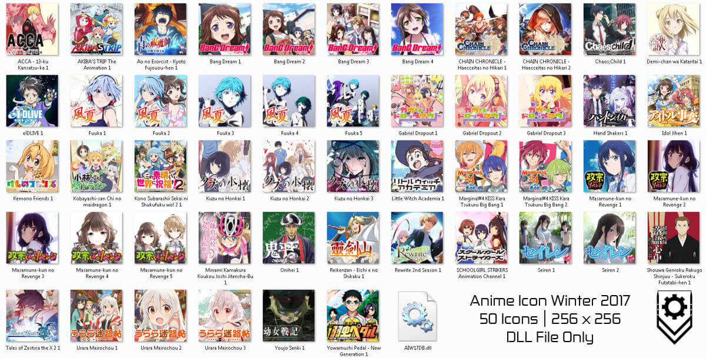

Yusatsu Nao's Blog
Thursday, January 12, 2017
Anime Icon Winter 2017 Released
Posted by Yusatsu Nao
Hello guys, welcome to my official site. Right now I post an Anime Icon for this season, winter 2017. Actually it's not winter in here, it's rainy season. ahh well forget it. This time I make Anime Icon for windows, I hope I can make icon for Macintosh too, but that takes time to make it and I don't have enough raw files.and here is the list of the anime that I create the Windows icon.
- ACCA: 13-ku Kansatsu-ka
- AKIBA'S TRIP: THE ANIMATION
- Ao no Exorcist: Kyoto Fujouou-hen
- BanG Dream!
- CHAIN CHRONICLE: Haecceitas no Hikari
- Chaos;Child
- Demi-chan wa kataritai
- eIDLIVE
- Fuuka
- Gabriel Dropout
- Hand Shakers
- Idol Jihen
- Kemono Friends
- Kobayashi-san Chi no maidragon
- Kono Subarashii Sekai ni Shukufuku wo! 2
- Kuzu no Honkai
- Little Witch Academia
- Marginal#4 KISS Kara Tsukuru Big Bang
- Masamune-kun no revenge
- Minami Kamakura Koukou Joshi Jitensha-Bu
- Onihei
- Reikenzan: Eichi e no Shikaku
- Rewrite/2nd Season
- SCHOOLGIRL STRIKERS Animation Channel
- Seiren
- Shouwa Genroku Rakugo Shinjuu: Sukeroku Futatabi-hen
- Tales of Zestiria the X 2
- Urara Meirochou
- Youjo Senki
- Yowamushi Pedal: New Generation
I'm only make the TV version for right now. I'll make the OVA, Movie and others if someone request it. I make the icon based on Anichart's list, so if you check it on there, there's some anime that I don't create the Icon. well, I have a reason for that, maybe you don't care about it, so I don't want to tell about it. The picture below is the screenshot of the icon, I make a different choice or image for some anime so you can choose it freely by yourself.

I create the DLL Files so you guys can choose the icon easily. If you want the ".ico" or the Icon file only you can request it to me, please go to "About page" and find Google Forms, then fill in the form about what do you want. If you want to download the icons please check the link below.
DOWNLOAD | PASSWORD
Copyright © 2016 Yusatsu Nao
All images are copyright to their respective owners.
Okay guys, follow my LINE@ Account Page to get more info from me and my Google+. if you have a question, suggestion or request please go to "About Page" and fill in the google forms, I check it everyday if I'm not busy. I'll make another icon for you all. Thanks for visiting my site and have a great time.